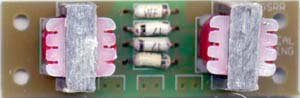

|
Real Ring Modulator for music synthesizers.


Please note: This is not a guitar effect where you can "plug in your guitar and get a sound out". Extra circuity is absolutely essential, either directly wired, or as parts of other equipment. If you need to ask how to use it, then it's not for you. Four quadrant multipliers have more or less replaced ring modulators in synthesizers, even though they still bear the label "ring modulator". The distortion in these is lower than that of a true diode ring modulator, because the diode voltage drops have been eliminated. This leads to better specifications, though in a noise maker, this is not always desirable. For years I have been building various four quadrant modulators, and have been satisfied with none of them. Not one of them had the raw sonic beauty of the traditional ring modulators I made when I was first starting out in synthesizer building. For that reason I present here the "Real Ring Modulator", a traditional diode and transformer ring modulator. The pre-assembled units were hand assembled using matched germanium diodes and a pair of brand new 3k impedance transformers. Some RRMs used diodes from a computer from 1969. The pre-assembled have been discontinued. Carrier suppression is good, but not complete, so a compressor-expander could help if better suppression is required.
Construction
For the pre-assembled version, the only "assembly" needed is to connect the board to input and output jacks. Parts list.
To match diodes, measure the voltage drop across the forward biased diode junction using the diode-test function of any good digital multi-meter. Pick diodes that have readings that are as close as possible to each other. The greater the number of diodes you have to hand, the greater your chance of getting a well matched set. Important! The diode voltage drop is affected by temperature. You must measure all of your diodes in one session, and you must not handle them with your fingers during the process. It is easiest to measure them while they are still on the tape on which they are usually supplied. Stick that to a piece of paper, and write the voltage down beside each as you measure them. The V1.1 PCB has pads for a greater range of transformer footprints. Notes:
If anyone is interested in buying these PCBs, please. Check the PCBs for Sale page to see if I have any in stock.
Can't find the parts? See the parts FAQ to see if I've already answered the question. Also see the CGS Synth discussion group.
Article, art & design copyright 2004 by Ken Stone
|